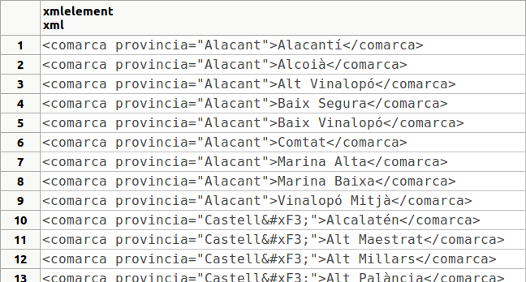

3.3 - Funcions que produeixen contingut XML
Veurem en aquest apartat les funcions que ens proporciona PostgreSQL per a generar contingut XML. El resultat de totes elles és de tipus XML, i serviran per a generar un element, atribut, element arrel, concatenar, ... de manera que podrem generar contingut XML ben format.
Són aquestes:
XMLCOMMENT
Sintaxi: xmlcomment (text)
Descripció: genera un comentari XML, amb el contingut del paràmetre. En aquest contingut no pot anar '--', per a no confondre amb l'etiqueta del comentari
Exemple:
XMLCONCAT
Sintaxi: xmlconcat (xml [, ... ])
Descripció: concatena una llista de valors XML, sent el resultat també XML
Exemple:
XMLELEMENT
Sintaxi: xmlelement (name nom [, xmlattributes (valor [AS nomatribut] [ , ... ] ) ] [ , contingut , ... ] )
Descripció: genera un element amb el nom especificat, possibles atributs amb els seus valors, i possible contingut (si no posem contingut serà un element buit
Exemples:
Anem a posar ara un exemple que combine tot un poc:
O un altre molt interessant que crea un element comarca per a cada comarca de la taula COMARQUES, posant-li a més com a atribut la província:
FROM COMARQUES
ORDER BY provincia,nom_c;
El resultat seria aquest:

on podria sorprendre el tractament dels accents i caràcter especials, però no oblidem que és la manera de codificar aquestos caràcters en XML
XMLFOREST
Sintaxi: xmlforest (contingut [ AS nom] [ , ... ])
Descripció: crea una sèrie d'elements i els seqüencia un darrere de l'altre. És especialment útil quan accedim a alguna taula
Exemple:
Com comentàvem és especialment útil quan accedim a taules. El següent exemple crea els element nom i província amb els valors de cadascuna de les files:
FROM COMARQUES
ORDER BY nom_c;
Si açò ho enganxem amb la creació de l'element comarca, el tindrem ben format, d'una forma equivalent a una anterior, però sense atributs, tot subelements:
FROM COMARQUES
ORDER BY nom_c;
XMLAGG
Sintaxi: xmagg (xml)
Descripció: podem considerar-la una funció d'agregat, que concatena tots els element que li arriben. És a dir, que xmlconcat concatena els valors dels paràmetres, però de forma aïllada, cada fila és en un resultat diferent. En canvi xmlagg els junta tots en un únic resultat.
Exemples:
Que així queda aproximadament com la concatenació. Però la utilitat gran és quan agreguem els elements d'una taula (recordeu que el paràmetre ha de ser XML)
FROM COMARQUES;
Per tant ara ja tenim la manera d'ajuntar totes les comarques en un únic XML i posar-li nom al conjunt:
FROM COMARQUES;
XMLROOT
Sintaxi: xmlroot(xml, version text | no value [, standalone yes|no|no value])
Descripció: modifica les propietats del node arrel del XML que tenim com a primer paràmetre. Si s'especifica la versió, reemplaçarà la que hi haja. I el mateix amb l'atribut standalone.
Exemple:
Com podem comprovar, amb aquestes funcions podem formar un document sencer, i de forma prou senzilla.
Anem a aprofitar-ho doncs per a inserir una nova fila a la taula P_XML, on teníem un camp XML. Per a poder introduir totes les comarques en un document, i afegir-lo a aquesll taula podríem fer:
A continuació veurem una forma molt més senzilla d'introduir tota la taula de comarques com un document XML, però aquesta forma que acabem d'utilitzar ens permetria modificar al gust el format (per exemple posant la província com un atribut)
Llicenciat sota la Llicència Creative Commons Reconeixement NoComercial CompartirIgual 2.5